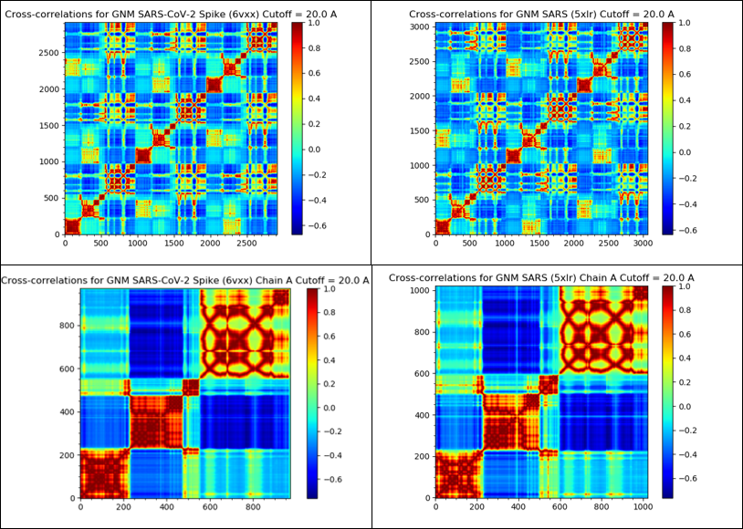
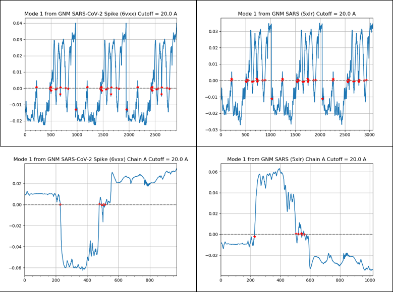
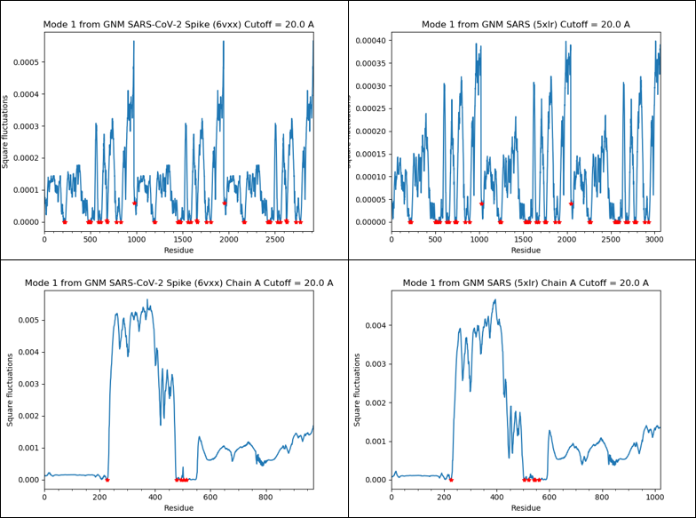
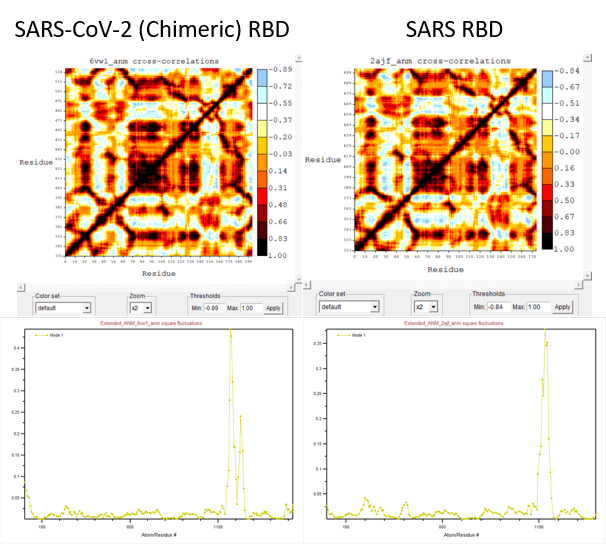

Conclusion: From Static Protein Analysis to Molecular Dynamics
Modeling protein bonds using tiny springs
To conclude part 2 of this module, we transition from the static study of proteins to the field of molecular dynamics (MD), in which we simulate the movement of proteins’ atoms, along with their interactions as they move.
You may think that simulating the movments of proteins with hundreds of amino acids will be a hopeless task. After all, predicting the static structure of a protein has occupied biologists for decades! Yet part of what makes structure prediction so challenging is that the “search space” of potential shapes is so enormous. Once we have established the static structure of a protein, its dynamic behavior will not allow it to deviate greatly from this static structure, and so the space of potential structures is automatically narrowed down to those that are similar to the static structure.
A protein’s molecular bonds are constantly vibrating, stretching and compressing, much like that of the oscillating mass-spring system shown in the figure below. Bonded atoms are held together by sharing electrons and are held at specific bond length due to the attraction and repulsion forces of the negatively charged electrons and positively charged nucleus. If you push the atoms closer together or pull them farther apart, they will “bounce back” to their equilibrium.
 A mass-spring system in which a mass is attached to the end of a spring. The more we move the mass from its equilibrium, the greater its resistance and the more it will be repelled back toward equilibrium. Courtesy: flippingphysics.com.
A mass-spring system in which a mass is attached to the end of a spring. The more we move the mass from its equilibrium, the greater its resistance and the more it will be repelled back toward equilibrium. Courtesy: flippingphysics.com.
In an elastic network model (ENM), we imagine nearby alpha carbons of a protein structure to be connected by springs. Because distant atoms will not influence each other, we will only connect two alpha carbons if they are within some threshold distance of each other (the default threshold used by ProDy is seven angstroms).
A major strength of ProDy is its implementation of a Gaussian network model (GNM), an ENM for molecular dynamics; the GNM is called “Gaussian” because protein bond movements follow normally distributed (Gaussian) distributions around their equilibria. Furthermore, this model is isotropic, meaning that it only considers the magnitude of force exerted on the springs between nearby molecules and ignores any global effect on the directions of these forces.
Although it may seem that atomic movements are frantic and random, the movements of protein atoms are in fact heavily coordinated, owing to the evolution of the proteins to perform replicable tasks. As a result, the oscillations of these particles are often highly structured and can be summarized by using a combination of functions explaining them, or modes. (For those familiar with Fourier analysis, this is analogous to the fact that a function under certain conditions can be approximated using a sum of sine and cosine waves.) The paradigm resulting from the insight of breaking down oscillations into a comparatively small number of modes that summarize them is called normal mode analysis (NMA) and powers the elastic model that ProDy implements.
We will say more about NMA later in this lesson, but the details rely on some advanced linear algebra and are too technical for our aims in this course. For those interested, a full treatment of the mathematics of GNMs can be found in the chapter at https://www.csb.pitt.edu/Faculty/bahar/publications/b14.pdf.
By running molecular dynamics simulations, we obtain another way to study two homologous proteins by comparing their patterns of fluctuation under perturbation. With this in mind, we will use ProDy to perform NMA calculations as a final method of comparing the SARS-CoV-2 and SARS-CoV spike proteins. We also will use ProDy to compute a contact map, if you are interested in doing this after our discussion of contact maps in a previous lesson. When we return from the tutorial, we will explain each of the analyses that we perform in the tutorial.
Molecular dynamics analyses of SARS-CoV and SARS-CoV-2 spike proteins using GNM
In the tutorial, we used ProDy to generate visualizations of how the SARS-CoV-2 spike protein fluctuates compared to that of SARS-CoV. Here, we will explain how to interpret the results and compare them to analyze the similarities between the two proteins.
Cross-Correlation
Much as a contact map indicated which amino acids in a protein structure are close to each other, we will use a cross correlation map to show whether the movements of different amino acids are coordinated as the protein flexes. A matrix M receives a value at M(i, j) equal to the correlation between the movements of the i-th and j-th amino acids in a protein structure. The values of this matrix are decimals ranging from -1 to 1. M(i, j) is equal to 1 if the movements are completely correlated (both amino acids always move in the same direction), a value of -1 if the movements are completely anticorrelated (both amino acids always move in opposite directions), and a value of 0 if the movements are completely uncorrelated.
Much as the contact map typically has many values equal to 1 near the main diagonal, we commonly see a diagonal of strong cross-correlation values (i.e., either close to -1 or close to 1) because movements in an amino acid will almost always affect nearby amino acids.
Positive correlations near the diagonal represents correlations between contiguous residues and are characteristics of secondary structures (e.g., alpha helices and beta sheets), in which amino acids tend to move together. Correlations and anticorrellations off the diagonal (i.e., for amino acids distant from each other in the protein structure) may potential represent interesting interactions between non-contiguous residues and domains for further study.
From our results, we see that the SARS-CoV-2 and SARS S protein fluctuate similarly, supporting that they not only have similar structures, but similar dynamics as well.
 The cross-correlation heat maps of the SARS-CoV-2 spike protein (top-left), SARS-CoV spike protein (top-right), single chain of the SARS-CoV-2 spike protein (bottom-left), and single-chain of the SARS-CoV spike protein (bottom-right). The map shows every residue pair in the structure and the colors represent the correlation in the fluctuations of residues as shown in the spectrum. A value of 1.0 (red) means that the amino acids’ movements are perfectly correlated, and a value of -1.0 (dark blue) means that their movements are perfectly anticorrelated.
Slow mode shape and square fluctuations
Above, we pointed out that in NMA, we break down the complex movements of a protein in terms of a few simpler component functions called “modes”. The mode having the greatest contribution to these fluctuations (called the “slowest” mode) is charted in the figure below, called a slow mode shape plot, for the SARS-CoV-2 and SARS-CoV spike proteins. The amino acid positions are across the x-axis, and the direction/magnitude of movement is shown on the y-axis. Positive and negative values correspond to opposite directions of movement, and the farther a value is from zero, the more this position moves with respect to the given mode.
In this figure, we can see that the protein region between positions 200 and 500 of the spike protein is the most mobile. This region overlaps with the RBD region, found between residues 331 to 524. This analysis indicates that the RBD is a relatively mobile part of the spike protein, which matches our intuition that the RBD might need to be flexible in order to “catch” the moving target of an ACE2 enzyme and latch onto it.
 Slow mode plots of the SARS-CoV-2 spike protein (top-left), SARS-CoV spike protein (top-right), single chain of the SARS-CoV-2 spike protein (bottom-left), and single chain of the SARS-CoV spike protein (bottom-right). The x-axis represents the amino acid positions along the protein, and the y-axis represents the relative fluctuations at each amino acid position. From the single-chain plots for both SARS-CoV-2 and SARS, we see that the residues between 200 – 500 fluctuate the most. The plots between SARS-CoV-2 and SARS-CoV are very similar, indicating similar protein fluctuations for this mode.
A related plot called a slow mode square fluctuations plot is similar to the slow mode shape plot, except that its values are produced by multiplying the square of the slow mode by the variance along the mode. In this case, all the values will be positive, and larger amplitudes represent regions of greater fluctuation. As with the slow mode plots, the square fluctuations plots for SARS-CoV-2 and SARS-CoV shown below indicate that the RBD is highly mobile compared with the rest of the spike protein.
 Plots of the slow mode square fluctuation of the SARS-CoV-2 spike protein (top-left), SARS-CoV spike protein (top-right), a single chain of the SARS-CoV-2 spike protein (bottom-left), and a single chain of the SARS-CoV spike protein (bottom-right). The x-axis represents the amino acid positions along the protein, and the y-axis is proportional to the square of the fluctuations at each amino acid position. The plots between SARS-CoV-2 and SARS-CoV are very similar, indicating similar protein fluctuations for this mode.
Comparing Results
From these results, we can see that the SARS-CoV-2 and SARS-CoV spike proteins are not only very similar in terms of structure, but they are similar in terms of dynamics as well. This result is perhaps not a surprise since they both target the ACE2 enzyme, and it drives home the fact that proteins can seem almost identical and yet one can have very subtle changes that turns an outbreak into a pandemic.
ANM models account for the direction of protein fluctuations
The anisotropic counterpart to GNM, in which the direction of fluctuations is also considered, is called anisotropic network model (ANM). Although ANM includes directionality, it typically performs worse than GNM when compared with experimental data1. However, we can this model offers the benefit that it can be used to create animations depicting the range of motions and fluctuations of the protein.
In the tutorial linked below, we will apply ANM to produce versions of the plots that we produced above. We will also encounter NMWiz, which is short for “normal mode wizard”, a GUI for ProDy that is available as a plugin for VMD. We will use NMWiz to perform ANM calculations and create an animation of the SARS-CoV-2 (chimeric) RBD (PDB entry: 6vw1) and the SARS-CoV RBD (PDB entry: 2ajf).
ANM analysis of the coronavirus binding domain
In the tutorial, we were able to generate a cross-correlation map and square fluctuation plot for the SARS-CoV-2 RBD, which resemble the results that we obtained previously for GNM (see figure below). Unsurprisingly, we do not see significant differences between the plots for the two viruses.
 The cross-correlation map (top) and the square fluctuation plot (bottom) for the SARS-CoV-2 (left) and SARS (right) RBDs using ANM. Like the results from the GNM analysis, the map and plot are very similar between the two RBDs, indicating that their dynamics are similar.
The fluctuations calculated by ANM provide information on possible movement and flexibility but do not depict actual protein movements. To predict these movements, we used NMWiz and VMD to create animations of the protein fluctuations over time as calculated via ANM analysis. The following two animations show of the complex of each virus’s RBD (purple) bound with ACE2 (green). Important residues from the three sites of conformational differences from the previous lessons are also highlighted.
SARS-CoV spike protein RBD (PDB: 2ajf)
| SARS RBD | Purple |
|---|---|
| Resid 463 to 472 (Loop) | Yellow |
| Resid 442 (Hotspot 31) | Orange |
| Resid 487 (Hotspot 353) | Red |
| ACE2 | Green |
| Resid 79, 82, 83 (Loop) | Silver |
| Resid 31, 35 (Hotspot 31) | Orange |
| Resid 38, 353 (Hotspot 353) | Red |
SARS-CoV-2 spike protein chimeric RBD (PDB: 6vw1)
| SARS-CoV-2 (Chimeric) RBD | Purple |
|---|---|
| Resid 476 to 486 (Loop) | Yellow |
| Resid 455 (Hotspot 31) | Blue |
| Resid 493 (Hotspot 31) | Orange |
| Resid 501 (Hotspot 353) | Red |
| ACE2 | Green |
| Resid 79, 82, 83 (Loop) | Silver |
| Resid 31, 35 (Hotspot 31) | Orange |
| Resid 38, 353 (Hotspot 353) | Red |
Recall from our work in the previous lesson that the greatest contribution of negative energy to the RBD/ACE2 complex in SARS-CoV-2 was the region called “hotspot 31”. This region is highlighted in blue and orange in the above figures. If you look very closely (you may need to zoom in), as the protein swings in to bind with ACE2, the blue and orange regions appear to line up just a bit more naturally in the SARS-CoV-2 animation than in the SARS-CoV animation. That is, the improved binding that we hypothesized for a static structure appears to be confirmed by dynamics simulations. This provides one more piece of evidence that SARS-CoV-2 is more effective at binding to the ACE2 enzyme.
Summing Up
In this module, we have discussed a great deal of computational methods surrounding the analysis of proteins. We began with a discussion of the fundamental problem of determining a protein’s structure. Because experimental methods for identifying protein structure are costly and time consuming, we transitioned to discuss algorithmic approaches that do a good job of predicting a protein’s structure from its sequence of amino acids.
We then transitioned to the problem of comparing structures for related proteins, with a lengthy case study on comparing the SARS-CoV and SARS-CoV-2 spike protein structures. We saw that the problem of quantifying the “difference” between two shapes is more challenging than it might seem, and we established both global and local structure comparison metrics. We applied these approaches to isolate three candidate regions of the SARS-CoV-2 spike protein that seem to be bound better to the ACE2 enzyme, and we quantified this binding using a localized energy function.
We then saw that to infer a protein’s function, we need to move from studying structure to molecular dynamics, studying how the protein behaves within its environment as it flexes and bends in order to interact with other molecules.
This is a great deal of ground to have covered, but if we would like to present an ultimate moral to this chapter, it is that biology is an extremely complex subject. The structure prediction problem is decades old and still not fully solved, and computational approaches for studying protein structure and dynamics are sophisticated. But there is just as much that we have left undiscussed. What happens after the spike protein binds to ACE2? How does the virus enter the cell? How does it replicate itself? How does it fight our immune systems, and how can we design a vaccine to fight back? We would need far more time than we have here to treat all of these topics, but if you are interested in an online course covering some of them, then check out the free online course SARS Wars: A New Hope by our colleague Christopher James Langmead.
Thus concludes the third module of this course. In the course’s final module, we will turn our attention to a very different type of problem. To fight a virus like SARS, your body employs a cavalry of white blood cells. Maintaining healthy levels of these cells is vital to a strong immune system, and blood reports run counts of these cells to ensure they are within normal ranges. Can we teach a computer to run this analysis automatically?
We hope you will join us to find out!
-
Yang, L., Song, G., Jernigan, R. 2009. Protein elastic network models and the ranges of cooperativity. PNAS 106(30), 12347-12352. https://doi.org/10.1073/pnas.0902159106 ↩